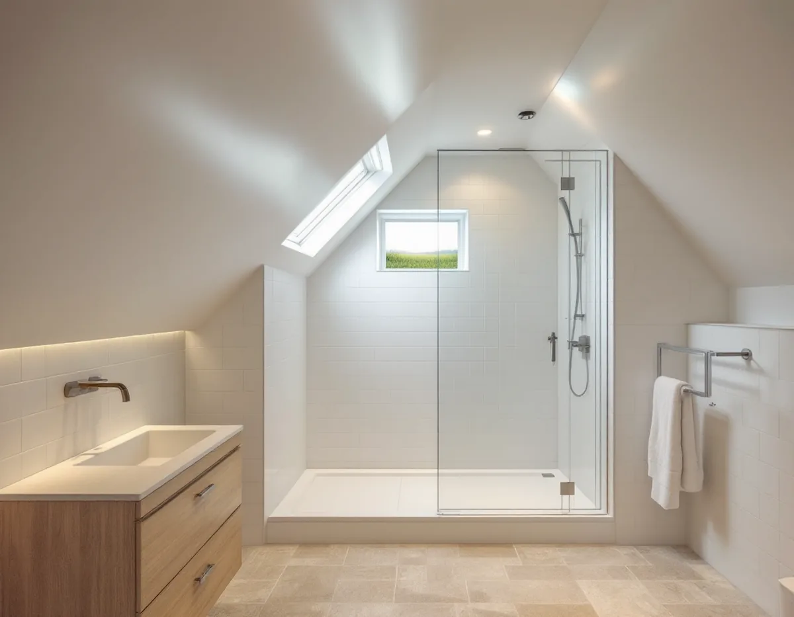
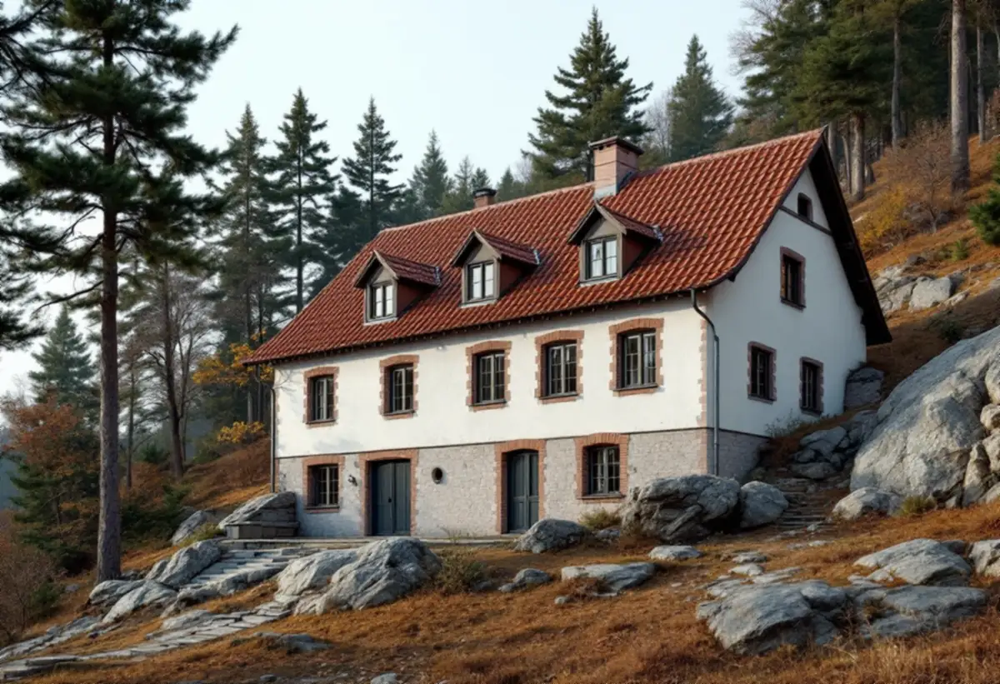

Platsbesök
Vi ser rummet, brunnens läge och om badrummet ligger mot mark.
En badrumsrenovering på Lidingö handlar ofta om ett våtrum i en villa från villastadens första decennier, ett källarbadrum i ett souterränghus i Brevik eller ett nytt badrum i ett gästhus på tomten. Vi river, bygger upp underlag och tätskikt och samordnar VVS och el, med ROT-avdraget direkt på fakturan.

AB Lidingö Villastad bildades 1906 av ingenjören Hjalmar Arwin, och enligt stadens kulturmiljöprogram fanns 293 villor i slutet av 1910. Villastadens kärna är byggd ungefär 1905–1930, och på 1940- och 50-talen styckades många stora tomter och fick nya hus. I Brevik står flera villor i souterräng.
Efterkrigstiden gav radhus. Mölna radhusby byggdes 1960–62 med fyrtio radhuslägenheter i sju längor, och 1979 tillkom närmare hundra radhus och kedjehus kring Klarbärsvägen i Käppala.
För badrummet betyder det två olika utgångslägen. I de äldre villorna har badrummet byggts in senare, kanske flera gånger, och kan ligga i källaren, på övervåningen eller i en gammal jungfrukammare. I radhusen fanns våtrummet från start och har samma ålder i hela längan.

Lidingö stad skriver på sin sida om spillvatten att fastigheter med lågt belägna golvbrunnar, främst hus med källare, riskerar att få avloppsvatten upptryckt bakvägen om avloppsledningen i gatan blir överbelastad, till exempel vid kraftig nederbörd. Det är ett skäl att fråga en VVS-installatör om skydd mot bakåtströmning när ett källarbadrum byggs om.
Staden påpekar också att det är fastighetsägaren som ansvarar för dag- och dräneringsvatten på tomten, och att det i första hand ska tas om hand inom fastigheten. Ett badrum i ett souterrängplan har ofta golv på betong och väggar mot mark, och fukt kan komma både inifrån och utifrån. Innan nytt tätskikt läggs undersöker vi underlaget och om det finns tecken på markfukt.
Spillvattnet från Lidingö renas i Käppalaverket, och staden ber alla att bara spola ner toalettpapper. Tops, hårstrån och fett hör till det som oftast orsakar stopp – värt att tänka på när en ny brunn och nya rör väl är på plats.
Sedan den 1 december 2025 kan ett komplementbostadshus byggas utan bygglov och utan anmälan om det håller måtten. Men Lidingö stad påpekar att ventilation, vattenförsörjning och avlopp i en sådan byggnad ska anmälas innan installationen görs. Staden nämner också anmälan när en extra bostad inreds i ett enbostadshus utan bygglov och vid en lovfri tillbyggnad.
Staden lyfter dessutom ett krav som gäller alla åtgärder, oavsett detaljplan och även när inget lov behövs: det som byggs ska vara väl gestaltat och anpassat till omgivningen. Mer om reglerna för små hus på tomten finns under attefallshus.
Ett nytt badrumsfönster, ett galler för frånluften eller en huv på taket ändrar husets yttre. Enligt Lidingö stad gäller utökad lovplikt för de flesta byggnadsåtgärder i särskilt kulturhistoriskt värdefulla områden, och de syns som ett blått lager i stadens webbkarta. Kulturmiljöprogrammet antogs den 16 december 2024. Det är inte juridiskt bindande men används som underlag vid bygglov, och för radhusen på Canadastigen, som är byggnadsminne, är det Länsstyrelsen som prövar ändringar.
Kontrollera därför kartan innan du bestämmer var frånluften ska gå ut. Ska den dras genom taket samordnar vi genomföringen med takets tätning; mer om taken på ön finns hos takläggare på Lidingö, och om metoden för tätskikt under badrumsrenovering.
Vi ser rummet, brunnens läge och om badrummet ligger mot mark.
Vi kollar stadens karta om något ändras på fasad eller tak, och vad som ska anmälas.
Du får ett skriftligt förslag där arbete och material står för sig.
Rummet öppnas, och vi bedömer fukt, underlag, brunn och rör.
Installatörerna gör sitt, golvet byggs med fall och tätskiktet läggs.
Kakel, klinker och porslin monteras, och du får egenkontroll och skötselråd.
Rotavdraget ger 30 procent av arbetskostnaden, upp till 50 000 kronor per person och år och 75 000 kronor ihop med rutavdrag. Vi drar det direkt på fakturan; material och resor ger inget avdrag.
Ett badrum i ett nybyggt fristående gästhus ger inget rotavdrag, eftersom nybyggnad inte räknas som rotarbete enligt Skatteverket. Ett badrum i villan eller i en tillbyggnad på ett hus som är äldre än fem år kan däremot ge avdrag.
I ett källarbadrum är det fukten och avloppets läge som brukar avgöra, i en äldre villa underlaget och rördragningen, och i ett gästhus vägen för vatten och avlopp från huvudbyggnaden. Storlek och ytskikt kommer sedan. Besöket är kostnadsfritt och du får ett skriftligt förslag.
Tätskikt, golvbrunn, el, VVS och intyg.
Badrumsrenovering i Stockholm →Takbyte, takbesiktning och plåtarbeten.
Takläggare på Lidingö →Brevik, Mölna och Käppala.
Takrenovering på Lidingö →Villastäderna och Brevik på Lidingö.
Fönsterbyte på Lidingö →Plåt i vind och värdefulla miljöer.
Plåtslagare på Lidingö →